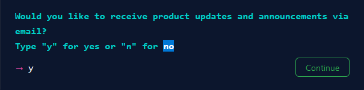
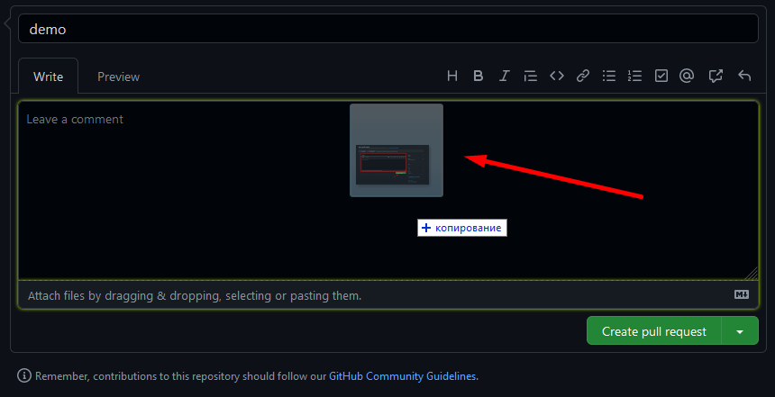

Что такое Git и GitHub?
Git — это система контроля версий, позволяющая эффективно управлять историей исходного кода. Любые изменения, которые ты вносишь в проект могут быть сохранены с помощью Git. Ты можешь вернуться к любым ранее сохраненным версиям. Без Git пришлось бы создавать копии проекта, что было бы проблемой при увеличении объема кода в приложении. На текущий момент Git — стандарт для разработки.
GitHub можно считать соцсетью для хранения кода. Здесь вы можете попрактиковаться в разработке и придумать что-то свое, найти множество open-source проектов, передовых технологий, различных функций и дизайнов.
На GitHub вы учитесь и участвуете в других проектах, храните код для работы или учебы, берете код других проектов и вникаете во все детали. А еще вы можете создавать сайты бесплатно напрямую из репозитория.
Для начинающих может быть непонятна разница между этими терминами.
Git — система контроля версий. Технология, которую можно скачать на компьютер.
Github — сервис, который позволяет работать с твоими Git проектами. Это называется
репозитории. Помимо
Github существуют другие сервисы (например Bitbucket, GitLab).
Git Bash. Это программой мы будем постоянно пользоваться, поэтому лучше скопировать эту программу в доступное место или же закрепить на панели задач (я рекомендую закрепить на панели задач).
Git Bash работает по принципу указания пути к файлу. Этим же принципом работают хостинги и сервера. Допустим у нас есть в папка “New Folder” в рабочем столе. Если мы зайдём на свойства этой папки, в разделе Общие посмотрим строку Расположение то увидим там примерно следующее C:\Users\Username\Desktop. Это означает, что ваша папка находится в папке Desktop, которая в свою очередь находится в папке Username, которая находится в папке Users и которая находится в диске C. Обычный юзер, чтобы войти в эту папку, заходит в Мой компьютер > Диск С > Users > Username > Рабочий стол (Desktop). Но мы уже программисты и поэтому начиная с этого момента, чтобы войти, копировать, переместить, создать и т.д. файлы, будем пользоваться командами и терминалом Git Bash.
В отличие от Windows в терминале, чтобы войти в папку Desktop мы не
начинаем с C.
/c/Users/"Username"/ заменяем символом ~ потом ставим
/
(косую черту), а дальше пишем
Desktop.
Пример:
~/Desktop
Перемещение по репозиториям
Чтобы перемешаться, пользуемся командой cd.
Пример:
Чтобы переместиться в Рабочий стол, пишем следующую команду
cd ~/Desktop

Чтобы узнать, где мы находимся, пользуемся командоц pwd.
Пример:
Переместившись в Рабочий стол, я хочу узнать где я нахожусь. Пишу команду
pwd.
Обычный юзер, когда находится в какой-либо папке, видит то, что в ней находится. Чтобы нам, программистам, узнать через терминал, что находится в папке, в которой мы находим, пишем команду ls.
Пример:
Обычный юзер зашёл в Рабочий стол и открыл там обычную папку Folders и
видит, что в ней
находятся еще 5
папок.

Программист же находясь в папке Desktop (в рабочем столе) набирает команду cd Folders и переходит в папку Folders. Затем набрав команду ls и терминал выдаёт ему название папок, которые находятся в этой папке.

Чтобы узнать детальную информацию о файлах и папках находящихся в данной папке, надо набрать команду
ls -l.
В этом случае выходит информация о том когда эти файлы создавались или изменялись в последний раз.

ВОПРОС:
Я нахожусь в папке Folders. Мне надо перейти в папку Folder 2, которая находится в папке Folder 1, которая в свою очередь находится в папке Folders (В той папке, которой я нахожусь). Ответ пришлите мне в личку. (Примечание: чтобы обозначить папку, в которой вы находитесь, надо поставить точку. Пример: ./user/folder ) Если в название файла присутствует пробел, то пишем название в кавычках.
Ответ напишите в комментариях.
Ранее я указал, что чтобы начать с папки, в которой я нахожусь, надо поставить точку. Но чтобы
перейти назад, в папку с которого я перешёл в эту папку, то пользуемся двумя точками. Допустим, я нахожусь в
папке Folder 2 , которая в свою очередь находится в папке
Folder. Мне надо перейти в папку Folder 1 , а потом уже перейти в папку
Folder
3,
которая также
находится в
папке Folder 1.
Для этого пишем следующую команду:
cd ../"Folder 3"
C помощью .. (двух точек) мы переходим на одну папку назад, а потом уже в этой папке поставим / и указав название папки мы переходим на эту папку.
ВОПРОС:
Я нахожусь в папке Folder 2. Путь у папки такой
~/Desktop/Folders/Folder 1/Folder 2 Теперь мне надо перейти в папку Folders , затем перейти в папку Folder 2, которая находится в Folders, а дальше перейти уже в папку Folder 3, которая находится в папке Folder 2.
Т.е. мне надо перейти
отсюда~/Desktop/Folders/Folder 1/Folder 2
сюда~/Desktop/Folders/Folder 2/Folder 3
Ответ напишите в комментариях.
Создание папок
Чтобы создавать новую папку, программисту надо пользоваться командой mkdir.
Допустим мне надо создать папку MyName в папке, в которой я нахожусь. В данном случае я
пишу команду
mkdir ./MyName
С помощью точки я указываю место, где я нахожусь. А затем пишу название папки. Выше на рисунке вы можете увидеть результат, который я показал с помощью команды ls -la. Можно одной командой создать несколько папок. Для этого просто между названиями надо ставить пробел.
ВОПРОС:
Ответ напишите в комментариях.
- Я нахожусь тут
~/Desktop/Folders/A/B
мне надо перейти сюда~/Desktop/Folders , а затем отсюда
создать папку под названием E тут~/Desktop/Folders/B/A не переходя сюда.- Я нахожусь тут
~/Desktop/Folders/A/B, а затем отсюда
создать папку под названием F тут~/Desktop/Folders/B/A не переходя сюда.
Создание файлов
Мы научились создавать папки, а теперь научимся создавать файлы. У каждого файла существует свой тип. Называет этот тип расширением. Увидеть расширения файла мы можем, включив функцию Расширения имён файлов.
Для этого мы должны зайти в любую папку (как обычный юзер) и сделать следующее.
-
Кликнуть на Вид

-
Затем кликнуть на Расширения имён файлов

Теперь после названия файлов будет точка, а дальше уже расширение этого файла. Например:
Этим же принципом мы будем пользоваться, при создании файлов. Создавать файлы мы будем с помощью команды touch. Мы пишем эту команду, затем пробел, название файла, точку и расширение файла. Пример:
touch a.docx
Чтобы создать несколько файлов, между названиями с расширениями ставим пробел. Пример:
touch a.docx b.html
ВОПРОС:
Ответ напишите в комментариях.
- Я нахожусь тут ~/Desktop/Folders/A/B,
мне надо перейти сюда ~/Desktop/Folders/B/C и создать тут 3 файла,
с названиями A с расширением docx, B с расширением html, C с расширением .css .- Я нахожусь тут
~/Desktop/Folders/B/C,
находясь здесь мне надо создать тут~/Desktop/Folders/A/B 3 файла,
с названиями A с расширением docx, B с расширением html, A с расширением .docx .
Удаление файлов
Мы научились создавать папки и файлы, сейчас же научимся их удалять.
ОСТОРОЖНО!
Прежде чем удалять файлы, убедитесь, что вы правильно указали путь к файлу и названию файла, т.к. восстановить удалённый через терминал файл не получится.
Чтобы удалить файл, мы пользуем командой rm (от слова remove). Допустим, я хочу удалить файл A.docx . В таком случае я пишу команду rm a.docx . Пример:
Я создал 3 файла с разными расширениями. Сейчас я их удалю с помощью команды rm.
Как видите, одной простой командой я удалил сразу несколько файлов. Чтобы удалить папку, мы пользуемся командой rm -rf.
Перемещение файлов
Теперь научимся перемещать файл из одной папки в другую. Для этого используем команду git
mv. Например, у нас есть 2 папки
Odin1, Odin2. В папке Odin1 есть
файл index.html, а в папке Odin2 есть файл index2.html.
Нам надо из папки Odin1 взять файл index.html и переместить в папку
Odin2. Для этого набираем команду
mv ./Odin1/index.html ./Odin2.

Чтобы очистить окно с командами, набираем команду clear. Если же не хотим удалять, а просто хотим поднять их, то нажимаем ctrl + l. Чтобы открыть папку в которой мы находимся в visual studio code, набираем команду code и пишем рядом точку. Чтобы открыть просто папку, то пишем команду explorer.
Все команды, которые мы прошли.
- pwd – показывает где я нахожусь.
- cd – перемещаемся по директориям.
- ls, ls -l, ls -la – показывает, что находится в папке.
- mkdir – создаём папку
- touch – создаём файл
- rm – удаляем файл
- rm -r – удаляем папку (я объяснил Вам команду rm -rf, но лучше использовать эту команду)
- rm – перемещаем файлы
- clear – очищает историю команд
- code . или же вместо точки путь – открывает папку в visual studio
- explorer – открыть папку просто в окне (для мака пишем open)
Тут я прошёл основные команды. Более подробно можно прочитать в интернете или же по ссылкам ниже.
Дополнительно:
- Подробнее прочитать можете тут https://git-scm.com/book/ru/v2 и тут https://githowto.com/ru
- Потренироваться можете тут https://linuxjourney.com/, там выберите русский язык
Домашнее задание:
Создать одну папку, потом внутри создать еще 4, внутри каждого должны быть по 3 файла с разными расширениями.
Ответ напишите в комментариях.
Регистрация в Github
- Открываем страницу https://github.com/ и нажимаем там на Sign Up
- Вводим свой Email и нажимаем Continue
- Вводим свой пароль и нажимаем Continue
- Вводим свой ник и нажимаем Continue
- Вводим букву y и нажимаем Continue

- Проходим верификацию
- Вписываем код, который пришёл к нам на Email
Готово, теперь у Вас есть аккаунт в Github
Создание репозитория
Для cоздания репозитория кликните на кнопку New repository справа вверху.
На странице создания репозитория https://github.com/new укажите:
- Название репозитория
- Описание (можно и не писать)
- Настройки видимости (приватный это репозиторий или публичный)
Связать локальный репозиторий с удалённым
Репозиторий в виде папки у вас на компьютере называется локальный репозиторий. Репозиторий, загруженный на GitHub, называется удалённый репозиторий. Есть две пути создания связи локального репозитория с удалённый:
- Создать копию существующего локального репозитория в удалённом.
- Создать копию существующего удалённого репозитория в локальном.
Сначала мы рассмотрим первый вариант. После того мы создаём удадённый репозиторий, там если присмотреться указано, как дальше поступать. Есть ссылка, с которым мы будем работать и дальше инструкция
И так, допустим мы создали папку Demo у нас на Рабочем столе. Затем внутри этой папки создали файл с названеием index.html. Теперь с помощью терминала заходим в этом папку и нам надо сделать эту папку отслеживаемой. Для этого мы набираем команду
git init
После того как мы это сделаем, рядом появляется надпись master. Это означает, что связь создана. Далее мы набираем команду
git remote add origin ваша_ссылка_на_репозиторий
C помощью этой команды, мы создаём связь между локальным репозиторием и удадённым. Затем мы набираем команду
git status
Эта команда показывает нам, что у нас есть один неотслеживаемый файл (он обычно показывает нам его красным).Чтобы Git начал следить за этим файлом, мы набираем команду
git add .
Теперь уже, когда мы наберём команду git status, он покажет нам этот файл зелёным, тем самым дав нам знать, что этот файл уже отслеживается. Теперь нам надо закомментировать наш шаг, чтобы в будущем когда мы решим вернуться к этому шагу, мы знали где и как его искать. Для этого мы используем команду
git commit -m 'Ваш комментарий'
И последний шаг, надо отправить все файлы в удалённый репозиторий и для этого мы пишем команду
git push origin master
Теперь, если мы зайдём в наш Github, то увидим, что наши файлы уже там присутствуют.
Убедиться в том, что наша папка отслеживается мы можем еще и обычным юзерским способом. Если мы откроем нашу папку, зайдём в вкладку Вид и поставим галочку на Скрытые элементы, то увидим папку .git
Клонирование репозитория на компьютер
Если в удалённым репозитории уже существуют какие то файлы, то рекомендуется вначале его скопировать, а уже потом начать с ним работать. Для этого мы заходим на наш Github, нажимаем на зелёную кнопку Code и узнаём ссылку нашего репозитория.
Затем, чтобы клонировать файлы этого репозитория и создать связь между удалённым репозиторием и локальным мы набирем команду
git clone ваша_ссылка_на_репозиторий
Если необходимо склонировать себе на компьютер отдельную ветку репозитория, выполните команду
git clone ссылка_на_репозиторий -b название_ветки
Загрузка файлов в репозиторий
Загрузить файлы в репозиторий можно как через GitHub, так и через Git. Рассмотрим оба варианта
Через Github
Загрузка файлов в репозиторий через интерфейс GitHub.
- Кликаете на кнопку Add file справа вверху
- Выбираете Upload files
- В появившееся окно перетягиваете файлы и папки с проектом
Через Git
Загрузка файлов в репозиторий через Git мы уже ранее рассматривали, но давайте повторим
- клонируете репозиторий себе на компьютер. Для этого в Git Bash выполняете команду git clone ссылка_на_репозиторий
- перетягиваете в папку репозитория файлы и папки с проектом
- индексируете изменения. Для этого выполняете команду git add . (с точкой в конце)
- коммитите изменения. Для этого выполняете команду git commit -m "пишете что изменили"
- загружаете файлы в репозиторий. Для этого выполняете команду git push origin main , здесь main - название ветки репозитория, в которую пушите
Хочу еще немного поговорить о комментариях. Напишу вам несколько рекомендаций по комментариям.
- Названия коммитов должны быть согласно гайдлайну.
- Должен использоваться present tense ("add feature" not "added feature")
- Должен использоваться imperative mood ("move cursor to..." not "moves cursor to...")
Примеры имен коммитов
-
init: - используется для начала проекта/таска. Примеры:
git commit -m 'init: start youtube-task'
git commit -m 'init: start mentor-dashboard task' -
feat: - это реализованная новая функциональность из технического задания (добавил поддержку зумирования, добавил footer, добавил карточку продукта). Примеры:
git commit -m 'feat: add basic page layout'
git commit -m 'feat: implement search box'
git commit -m 'feat: implement request to youtube API'
git commit -m 'feat: implement swipe for horizontal list'
git commit -m 'feat: add additional navigation button'
git commit -m 'feat: add banner'
git commit -m 'feat: add social links'
git commit -m 'feat: add physical security section'
git commit -m 'feat: add real social icons' -
fix: - исправил ошибку в ранее реализованной функциональности. Примеры:
git commit -m 'fix: implement correct loading data from youtube'
git commit -m 'fix: change layout for video items to fix bugs'
git commit -m 'fix: relayout header for firefox'
git commit -m 'fix: adjust social links for mobile' -
refactor: - новой функциональности не добавлял / поведения не менял. Файлы в другие места положил, удалил, добавил. Изменил форматирование кода (white-space, formatting, missing semi-colons, etc). Улучшил алгоритм, без изменения функциональности. Примеры:
git commit -m 'refactor: change structure of the project'
git commit -m 'refactor: rename vars for better readability'
git commit -m 'refactor: apply eslint'
git commit -m 'refactor: apply prettier' -
docs: - используется при работе с документацией/readme проекта. Примеры:
git commit -m 'docs: update readme with additional information'
git commit -m 'docs: update description of run() method'
Создание веток
Главная ветка репозитория по умолчанию называется main (раньше master). От неё можно создавать другие ветки, от них ещё ветки и т.д. На первых этапах учёбы все ветки создаются исключительно от главной ветки. Перед созданием новой ветки убедитесь, что вы находитесь в главной ветке репозитория. Создать ветку можно как через GitHub, так и через Git. Рассмотрим оба варианта.
Создание ветки через интерфейс GitHub
- Убедитесь, что вы находитесь в главной ветке репозитория main (или master)
- Кликните на треугольник рядом с названием ветки. В текстовое поле впишите название ветки, например, gh-pages
- Нажмите на строку Create branch: gh-pages from main (or from master). Мы создали ветку gh-pages
Создание ветки при помощи Git
-
Клонируем репозиторий себе на компьютер
git clone ссылка_на_репозиторий
-
Находясь в папке репозитория открываем Git Bash и выполняем команду
git checkout -b gh-pages
Мы создали ветку gh-pages и перешли в неё.
-
Обратите внимание, при создании ветки в неё копируются все файлы той ветки, от которой её создали.
Создание Pull Request
В ходе выполнения проектов вы чаще всего будете делать Pull Request из ветки
разработки в
главную ветку своего репозитория main или master, а также из ветки
разработки в
ветку gh-pages.
Pull Request создаётся через интерфейс GitHub. Для этого
- выберите ветку разработки
- нажмите на вкладку Pull Request вверху слева
- нажмите на кнопку New pull request справа вверху. Такая кнопка появится если в ветке разработки есть изменения по сравнению с другой веткой репозитория.укажите из какой ветки репозитория в какую делаете Create pull request
- укажите из какой ветки репозитория в какую делаете Pull Request
- нажмите на зелёную кнопку внизу Create pull request. Вы открыли Pull Request.
- К Pull Request можно и нужно добавить описание.
- добавить в описание Pull Request изображение можно просто перетянув его с компьютера
- Если нажать на кнопку Merge pull request, Pull Request закроется, при этом файлы из ветки разработки переместятся в ту ветку, в которую делаете Pull Request.

Деплой на gh-pages
Деплой это размещение в интернете вашего проекта - сайта или приложения. Предположим, весь наш проект - файл index.html с содержимым
<h1>Hello world</h1>
При создании в публичном репозитории ветки, GitHub автоматически размещает её содержание в интернете. То есть, если репозиторий публичный, в нём есть ветка, и в корне этой ветки находится файл index.html, этот файл уже размещён в интернете. Всё, что осталось сделать, найти ссылку на него.
-
Идём в настройки репозитория (шестерёнка с надписью Settings справа вверху)
-
Нажимаем слева на надпись Pages (слева)
-
Затем выбираем наш Branch и нажимаем save
-
После, если подождать 10 минут и зайти на эту страницу заново, то у вас должна появиться ссылка на вашу страницу в интернете. Каждый раз после обновления файлов в репозитории, надо ждать около 10-15 минут.